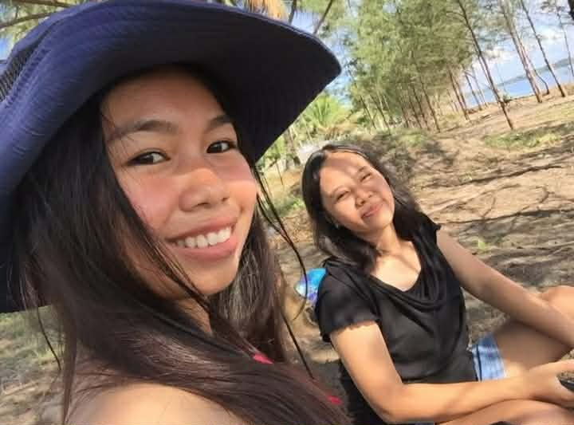
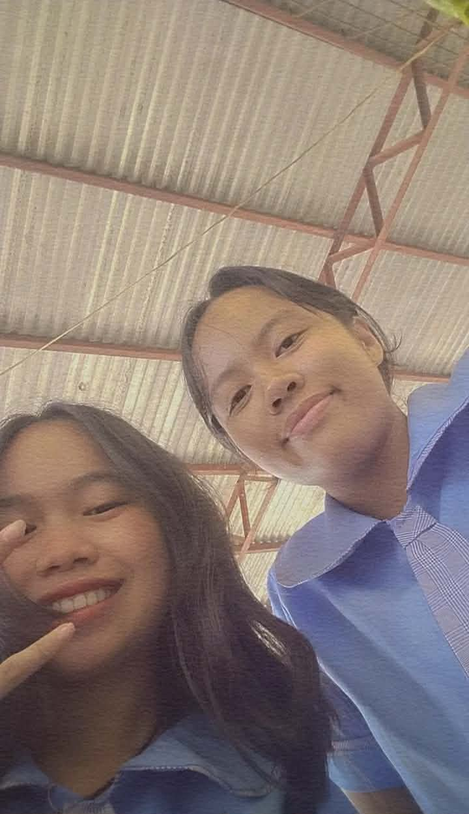
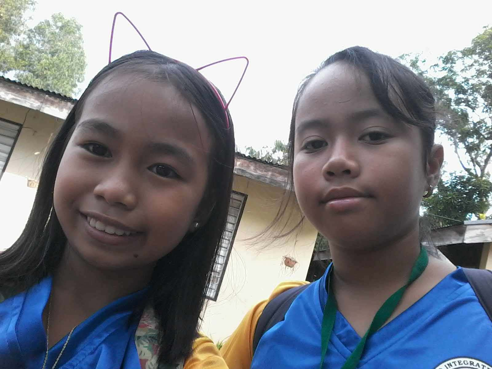

Jill
BUON COMPLEANNO TO THE ONE AND ONLY JILLIAN IN MY LIFE!! CONGRATS JILL DAHIL LEGAL KANA 🥳🥳🥳 Let's g party party 😜😜😜😜😜 I am very honored to be your best friend, I am so proud of you for being a sweet, nice, and caring bff to me. I am so excited for our next journey and for the college life that we've been dreaming of since we were in junior high school. Sana makita mo na siya, hueyyyyy HAHAHAH pag nagwork baka namannnnn trip to Boracay us? Chariz 😆😆 Always take good care of yourself ha, always gid, and iya man me para kimo always, same tag nagatangis me and kimo ako ga rants kasi ikaw ro willing nga mag listen kakon. Sabi nga nila "I have a theory that as long as you have one good friend, one real friend, you can get through anything.” and ikaw yon! You know na the other messages na I can't explain now kasi pabalik-balik lang dayon kasi ginghmabae ko ro iba last year and sa other part of this message. I just want you to know nga very very special gid ikaw sa akon nga life, for me hay wa gid it makapantay kimo. 🥰🥰🥰 STAYYYY GORGEOUS MY GURLLLYYYY, AND ALWAYS SHOW WHO YOU REALLY ARE!! THE CUTESIEEE AND CLEAN GIRLY FOR ME, I LOVE YOU A LOT JILL!! 🥳🥳🥳 pls enjoy your day, I'm here if you want nga magwarang us MWAAHH MWAHHH 💋💋💋💋💋💋💋💋
Vianna & Jill



100 Things why I love JILLIAN 1. She never turn back at me when I need her. 2. Always been a good best friend to me at the very start. 3. She's always there when I need her. 4. Didn't ever make me feel left out or lonely. 5. Stayed, even the friend group was falling apart. 6. Makes me feel heard and seen. 7. She supports me with my “kaartehan”. 8. Always with me at all cost. 9. She always listen to me, even I yap and talk about something over and over again. 10. Was there when I was crying, and when my life was falling apart. 11. Makes me feel like I have a sister. 🫂🫂🫂 12. Cheered me up when I was going through my break up. 13. Listened to me while I'm talking about my family problems, even cried with me when I called her the time that I was crying. 14. We have chika always. 15. Help me how to figure things out. 16. She's been there since I was with my first bf, cuz we love foreigner hunting. Joke! 17. Always makes me laugh, even in the worst situation. 18. She hypes me, and compliment me a lot when I'm posting myself. Love it! 😝😝 19. She stayed, even if we separated in Senior High School. 20. Always “G! ” when I'm planning out something, like going to kalibo. 21. She goes with me, if I need to do something, like next week maybe, cuz I need to go to the dentist. 🥰😻 22. NEVER BEEN A BAD FRIEND, EVUHHHHH!!! 23. Takes good picture of me. ANO TALAGA TO GUYS PAAMAN 🥰🥰 24. She makes me feel special, most of all on my birthday. 25. Sweet siya guys! Minsan halata, minsan hindi. Joke 😝😝😝😝 26. Has a good style. 27. She's VERYYYY pretty, mwaaaa. 28. Kase lablab Nana ako guys hehehehe 29. Alam ang GIRL CODE, dabest talaga! 30. SOBRANG GANDAAAA 31. Invites me to their house. 32. Never kami nag-away sa kahit anong bagay. 33. Kinddddd 😜💋 34. She has a good heart, and is very lovely. 35. She's so smart ☝🏻🤓 36. WE LOVE SKINCAREEEEE 37. Very gorgeous, plus pa kung may glasses imaw. 😩😩 38. Loves me! 🥰🥰 39. Has a wonderful personality. 40. Is a cheerful person. 41. Didn't ever let me down, when it comes to being my bff. 42. Doesn't let anyone bothers her peace, keeps everything aligned, and ik she loves being the way she is, cuz for me she is EVERYTHING I could ask for in terms of having an awesome best friend. 43. Is loyal, faithful, and honest type of a person. 44. Our bond never gets broken, whatever happen. 45. I love her, because we have a healthy friendships with no jealousy or other thing. 46. She has this goofy, silly, and dope personality which is I like. 47. Ginasabayan na abi ako sang trip, always. 48. Gina spoil man nana ako guysss 49. Supporter ko kahit sa anong relationship HAHAHHA 50. HANDA SYA PALAGIII 51. Cuz she tried hard para magkasama kami sa bh. 52. Always have this nice plans, and is a very clever girl. 53. I love how the way she puts herself first. 54. She doesn't forget about me. Aweee 55. Lets me borrow some of her makeup before, when I stayed in their house. 56. I felt very appreciated when I was in their house, like I'm very welcome. 57. She sleeps with me at the time that I was in their house, because I'm kinda scared of nothing haha. 58. She loves ukay, as much as I do! 59. Mind you, she's the bestest of all for me. 60. She always claim me as her bff, and that's what I like, because some used to call me just a friend. 61. She never denied me as her bff 62. She has a very strong bond and relationship with God. 63. Has this sweet and lovely voice. 64. I love the way she calls me gurl, sisz, bff, and etc. 65. Supports me at my katangahan. 66. She shares with me hehwhhe cutieeee. 67. I can trust her with my whole life. 68. Never a snitch guys saakin. 69. Nice music taste. 70. Loves to do productive things. 71. She is a very talented girl. 72. She's my definition of a clean girl. 73. Kagwapa gida abiiiiii! 74. She tells the truth to me. 75.She treats me well. 76. Always update me about very important things and most of all when it comes to school. 77. Gives the best advice 78. She understands me, even I'm not that very understandable. hahaha 79. Always present when I invite here at any party before in my house. 80. We plan some cutie things before in junior high for college, and we're about to fulfill those dreams. 81. Nevuhhhh say no when it comes to planning about traveling in the future. 😜😜😜 82. She tells me that she's gonna be the godmother of my kid in the future, which is very cutieee for me. Amen! 83. A very well mannered girl. 84. Loves Chinese HAHAHAH 85. Such a good bff talaga, she's someone that I won't ever let down. 86. She's someone who stands beside me even when everything feels uncertain. 87. The one who I can say that knows me really well. 88. Can truly see me and genuinely cares about me. 89. A good daughter and sister to her siblings. 90. She's someone you can rely on. 91. I love her, because i never once had to ask her to be a good friend. 92. My favorite person. 93. She's like an angel, what a gift from the heaven. 94. We may not talk to everyday, but when life gets heavy, she's the one i trust the most. 95. She have this good vibes that I really adore. 96. Cuz she seen me at my worst and my best. 97. She might have her own battles, but I can say she handles it wonderfully. 98. I never had a fake laugh with her. 99. I enjoy being with her eating, talking, crying and more. 100. SHE'S THE BEST!!!!